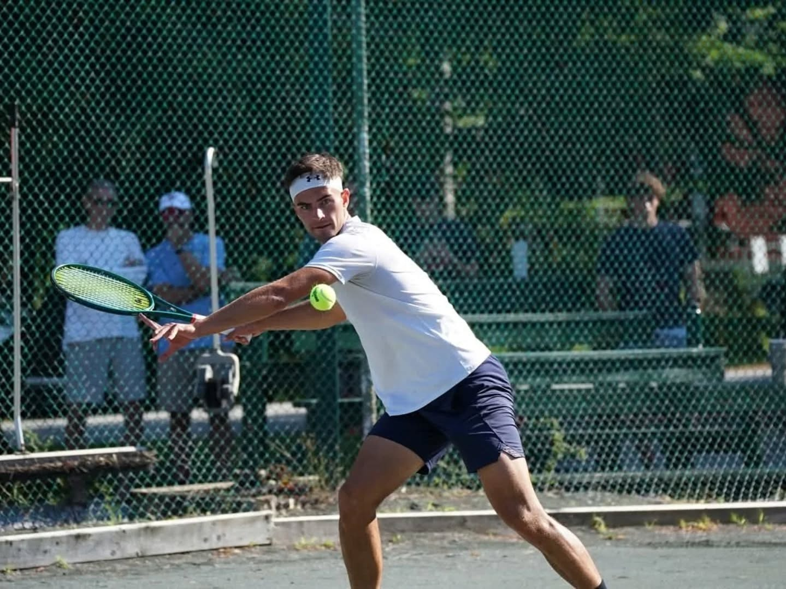

Match Prep, the MPTennis Way

Most club players' match prep is: arrive ten minutes early, stretch their hamstrings, hit a few mini-tennis balls, and walk on court hoping today's the day. That's not preparation. That's showing up.
Real match prep is 15 minutes of deliberate work that loads your nervous system, your tactics, and your decision-making before the first ball is struck. Here's how we do it.
Minutes 0–3: Off-Court Loading
Before you pick up a racquet, get the body honest. Two minutes of footwork — split steps, shuffle starts, three-step accelerations. One minute of arm circles and shoulder activation. Don't stretch cold. Move first, mobility second.
Minutes 3–8: Pattern Hitting, Not "Warming Up"
Mini-tennis is fine for the first 90 seconds. After that, get to the baseline and hit your patterns. Cross-court forehand to cross-court forehand — with intent on every ball. You're not warming up. You're rehearsing the shots you're about to play under pressure.
- 10 cross-court forehands at 70% with full extension
- 10 cross-court backhands
- 10 inside-out forehands from the deuce side
- 10 backhand-to-forehand changes of direction
If a pattern feels off, this is when you find out — not on 15-30, second serve.
Minutes 8–12: Serves With a Target
Most players spray a few serves and call it good. That's how you arrive at the first game with no idea where your serve is today. Instead:
- 5 first serves wide on deuce — pick a target, miss small
- 5 first serves T on deuce
- 5 first serves body on ad — yes, body
- 5 second serves with kick to the backhand
By ball 20 you'll know exactly what's working and what isn't. Now you have a real serve plan, not a hopeful one.
Minutes 12–15: Tactical Scan
Last three minutes — sit down. Water. Three questions:
- What's my A-pattern today? The shot combination I trust most given how the warmup went.
- Where's my opponent uncomfortable? If you've played them before — backhand, low, deep, wide? If you haven't — assume backhand and adjust by game three.
- What's my reset? The neutral, high-percentage shot I go to when a point gets loose. Usually a heavy cross-court forehand or a deep slice backhand.
You don't rise to the level of your hopes. You fall to the level of your preparation.
The Takeaway
Pre-match isn't about getting loose. It's about loading your body, calibrating your shots, and walking on court with two or three concrete decisions already made. Do this for a month and your first-set winning percentage goes up. Guaranteed.